LAWS OF MOTION
SELECT
DIFFICULTY
Value:
Unit:
no unit
m/s
m/s2
m
N
s
Divide the distance traveled (d) over the time elapsed (t) travelling: $$answer = {d \over t}$$
Divide the change in velocity (Δv) over the time elapsed (t) travelling: $$answer = {\Delta v \over t} = {(v_f - v_i) \over t}$$
Use the following equation to solve the question above: $$d = {v_it + {at^2 \over 2}}$$
d
is distance,
t
is time,
v
i
is initial velocity, and
a
is acceleration.
Use the following equation to solve the question above: $$d - d_i = {v_it + {at^2 \over 2}}$$
d
is the distance at t = 2s,
d
i
is the distance at t = 0s
t
is time,
v
i
is initial velocity, and
a
is acceleration.
Use the following equation to solve the question above: $$v_f^2 = {v_i^2 + 2ad}$$
d
is distance,
v
f
is final velocity,
v
i
is initial velocity, and
a
is acceleration.
In this case, the initial velocity is implicitly given:
v
i
= 0 m/s.
Use the following equation to solve the question above: $$v_f^2 = {v_i^2 + 2ad}$$
d
is distance,
v
f
is final velocity,
v
i
is initial velocity, and
a
is acceleration.
Derive the equation for acceleration given this formula.
Use the provided equation to find the distance traveled at 2.0 seconds (let this be x
1
) and then the distance traveled at 4.0 seconds (let this be x
2
). Then, get the answer by solving for the average of x
1
and x
2
.
Use the following equation to solve the question above: $$d = {{(v_i + v_f) \over 2}*t}$$
d
is distance,
t
is time,
v
f
is final velocity, and
v
i
is initial velocity.
Let a
A
be the acceleration of cycle A and a
B
be the acceleration of cycle B. Use the fact that their acceleration can be caculated by: $$v_{fA} = {v_i + a_At} \qquad v_{fB} ={_i + a_Bt}$$ Since, both have the same velocity after 4.0 s, v
fA
= v
fB
: $${v_{oA} + a_At} = {v_{oB} + a_Bt}$$Thus, solving for the difference in speeds: $${\Delta v} = {v_{oA} - v_{oB}} = {a_Bt + a_At} = {(a_B - a_A)t}$$This equation assumes that a
A
> a
B
.
First, calculate the net force acting on the boat: $$F_{net} = {F_1 + F_2 + F_3} \quad \text{Note: the concept of vectors still apply in this question.}$$Then, derive the equation for acceleration using the following formula to calculate the answer: $$F_{net} = {ma}$$
First, consider the forces acting on the object when facing east (first case) and facing opposite direction (second case): $${F_A + F_B} = {ma_{east}} \; \text{(first case)} \qquad {F_A - F_B} = {ma_{opposite}} \; \text{(second case)}$$Adding the two equations:$${2F_A} = {m(a_{east}+a_{opposite})} \; \text{∴} \;{F_A} = {{m(a_{east}+a_{opposite})} \over 2}$$Then, use the equation above to calculate the answer. Let a
east
be the object's acceleration during the first case and a
opposite
during the second case.
Use the provided equation to find the displacement traveled between the first (let this be x
1
) second second (let this be x
2
). Then, find the difference of x
1
and x
2
(i.e., Δx) to calculate the answer: $${\Delta x} = {x_2 - x_1}$$